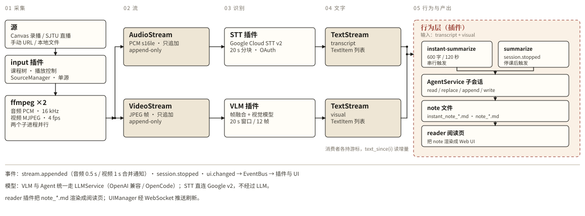
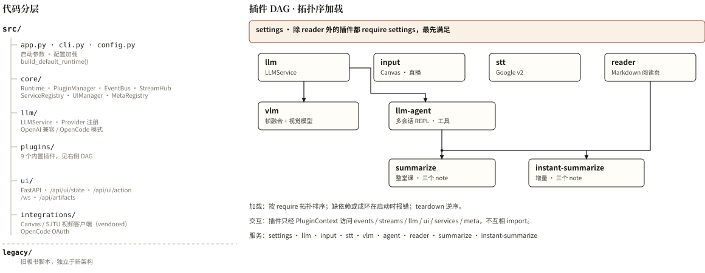

基于多模态感知与主动教学智能体的课堂代听与交互笔记系统
利用 SJTU Canvas 平台的直播与录播功能，
让 agent 代替学生听课。
学生不听讲课，只读 agent 产出的讲稿和 notes 完成学习。
接收课堂画面，理解画面内容
画面→文本
把课堂语音转成文字
语音→文字
接收两路文字，产出讲稿与长 notes
两路输入→长 notes
基础功能 7 项 · 扩展功能 6 项
模型接收课堂画面，理解画面里的内容，把图像转成文本，作为 NLP 部分的一路输入。
利用 FFT 做图形匹配，叠合一段时间的画面，消除遮挡。
遇到有图的画面时，视觉部分在输出里说明此处有一张什么图。NLP 部分据此判断是否需要回头调用图像，用于示意图重构等环节。
把课堂语音转成文字，作为 NLP 部分的另一路输入。可以直接采用本地或在线的成熟 STT 技术。
本地 / 在线
语音转写常把公式认错，还满是“看这个式子”之类的口头指代；板书识别公式准，却缺少推导的过渡与解释。两路材料对齐互证、相互补全，产出比单独任一路都更完整的课堂底稿。
笔记不必等到下课才一次性生成，上课过程中就按阶段实时产出一部分；学生低头做自己的事，每隔十几分钟抬头读一遍刚出炉的阶段笔记，就能随时跟上进度。
下课后对整堂课的材料做全局梳理，补齐上下文逻辑，输出一份结构完整、推导严密的长篇正式讲义。
定理、证明、例题等学科干货写进主讲义；考试安排、作业要求等教务通知单独剥离归档，避免漏看。
识别并筛掉与课程主线无关的闲聊（可单独折起备查），保证主笔记纯粹干净。
老师抛出问题、点名或让大家思考时及时提醒，并给出“老师问了什么”和默认折叠的“参考答案”，既不错过课堂互动，也留出自己动脑的空间。
课后长笔记里把老师提过的问题单独列成一栏，复习时还能顺着这些问题继续想下去。
不等学生发问就补充：某个东西是怎么想到的、有没有另一种证明方法、它和哪些内容有联系、后面的哪些内容能解决当前留下的疑问。
把老师手写的示意图转成 SVG 或 LaTeX，嵌进笔记。先结合上下文理解这张图在画什么，再用 SVG 重画回去。代数拓扑、复分析这类图多的课受益明显。
讲定理时只给大致方向，先不展示过程，学生说出自己的思路，由 agent 判断能不能走通。老师提问过的问题单独留作待答，agent 也可以自己多出一些题。
根据课程内容用 Manim 生成视频。关键在于判断 notes 的哪一部分适合可视化，以及怎么可视化。
可以用虚构人物讲解课程。这里的交互性弱一些，也可以根据数学知识生成小说，类似《数学女孩》，把课程内容放进去。
记住学生不会的内容和已经会了的问题。帮学生听课时，先判断哪些地方需要认真听、哪些可以略过；回答学生问题时，在对方不熟悉的地方展开得更细。


过滤掉课堂灌水与机械的出勤损耗，把原本需要几个小时正襟危坐听完的课，压缩成十几到几十分钟的高密度文本阅读与独立思考，用更短的时间学完并学透同样的内容。
课上“边做自己的事、边抬头看实时分段笔记跟课”，课后直接精读完整长 Notes。快慢全由学生自己说了算：懂的地方一扫而过，硬核定理随时停下来自己证一遍。
主动补充“怎么想到的”与替代证法、手绘示意图矢量化重构、不剧透过程的思路验证与高质量出题，再加上懂你哪里不会的长期学情记忆，把单向灌输的网课变成一个能随时追问“十万个为什么”的个人助教。
NLP 项目 · 开题报告
孔德玮 · 亓一辰 · 颜祖一 · 张霁帆